Mt. Lumot × Mt. SumagayaTraverse
Mossy forestKalanawan Peak
May 1–3, 2026Words & photos — Gladys
themoss
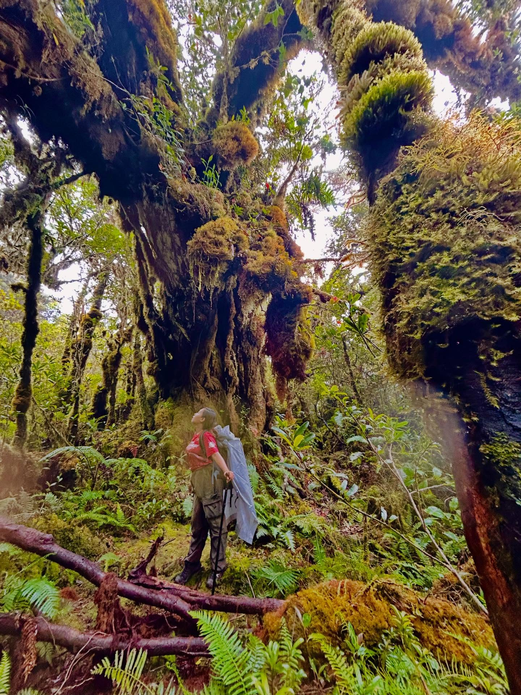
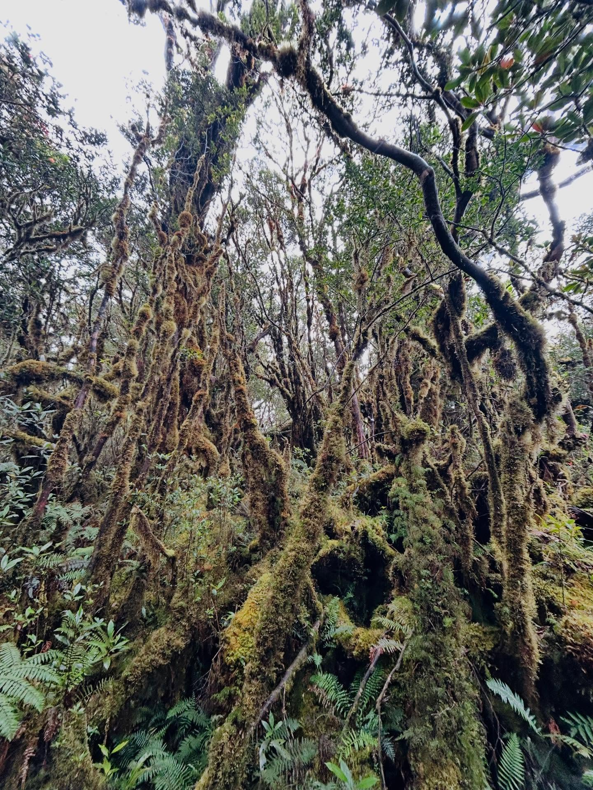
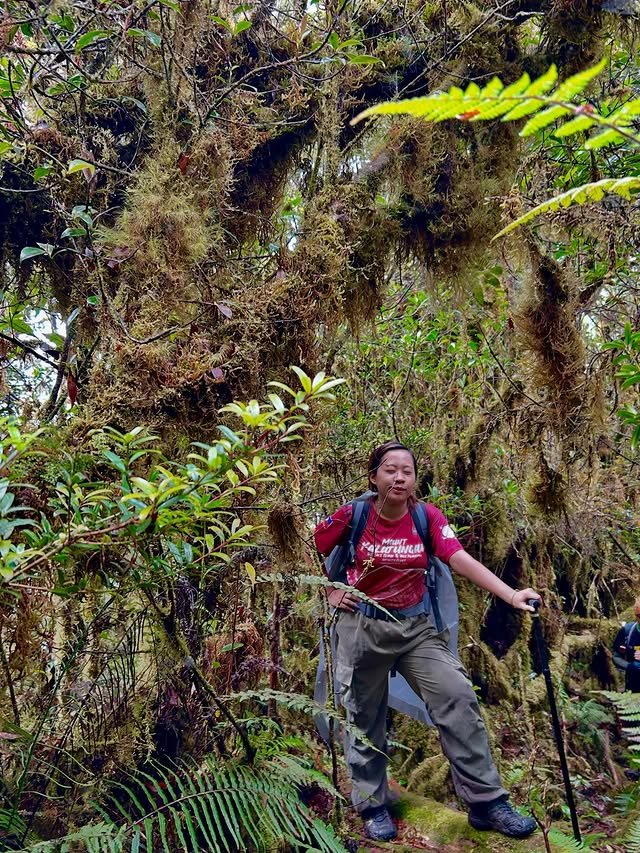
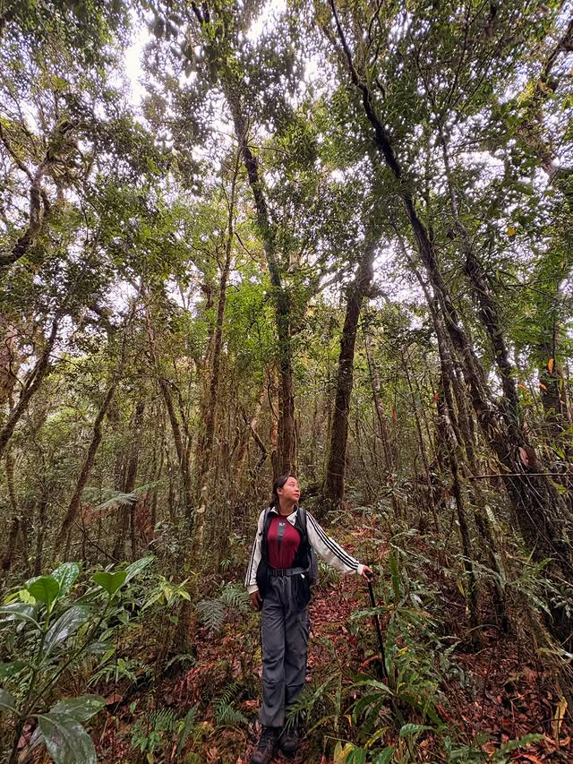
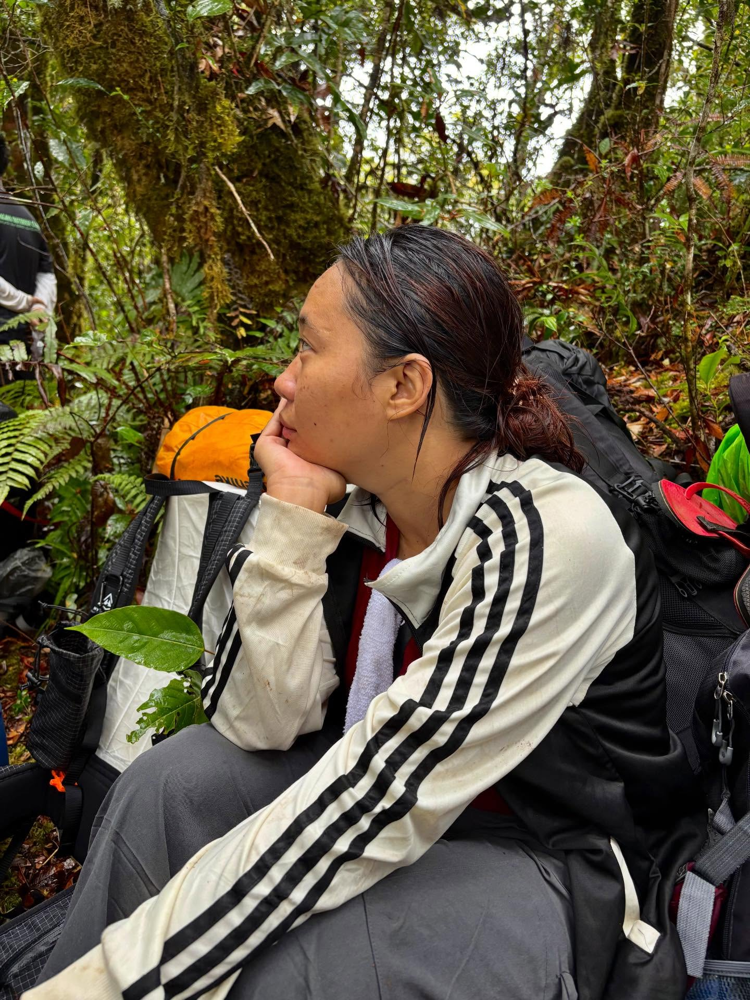
Nine hours and we met no one. The trees were older than the trail — you stop photographing the big ones and start standing under them instead. We rested because someone said rest. Nobody argued.
camp
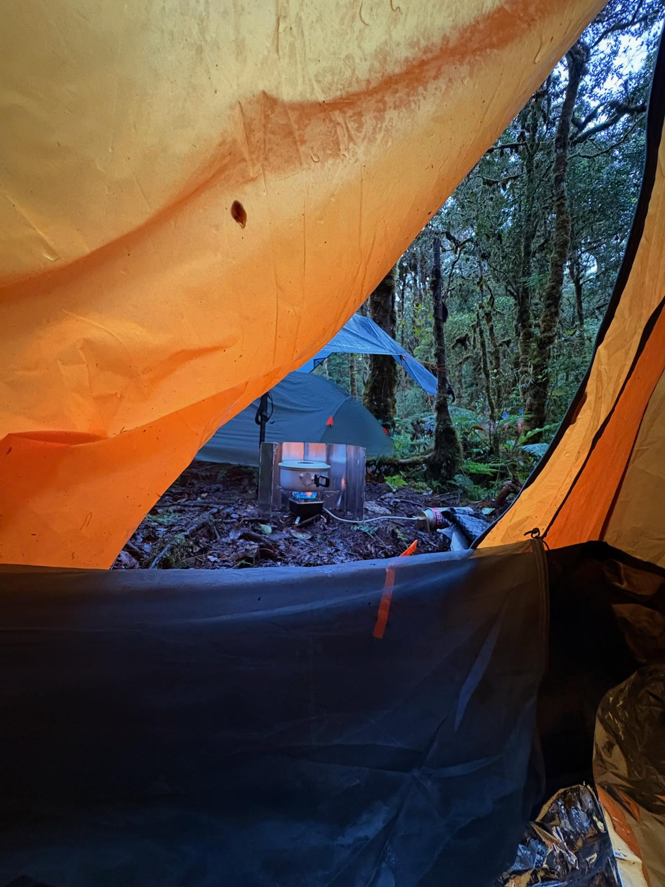
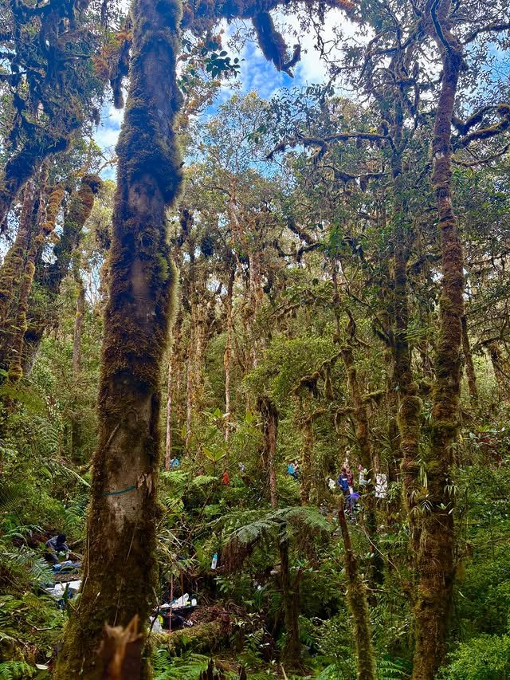
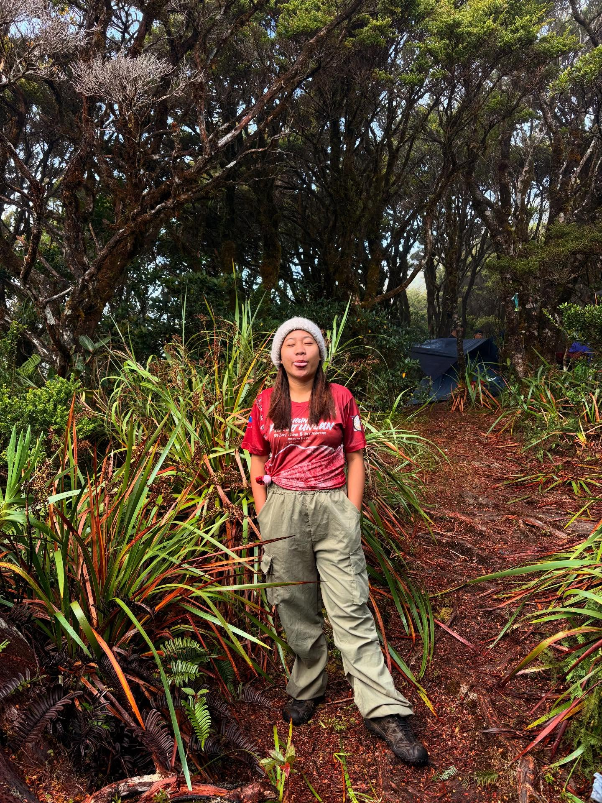
Dry socks — a small, enormous victory. The forest goes quiet at dusk. Then, slowly, it doesn't.
above theclouds
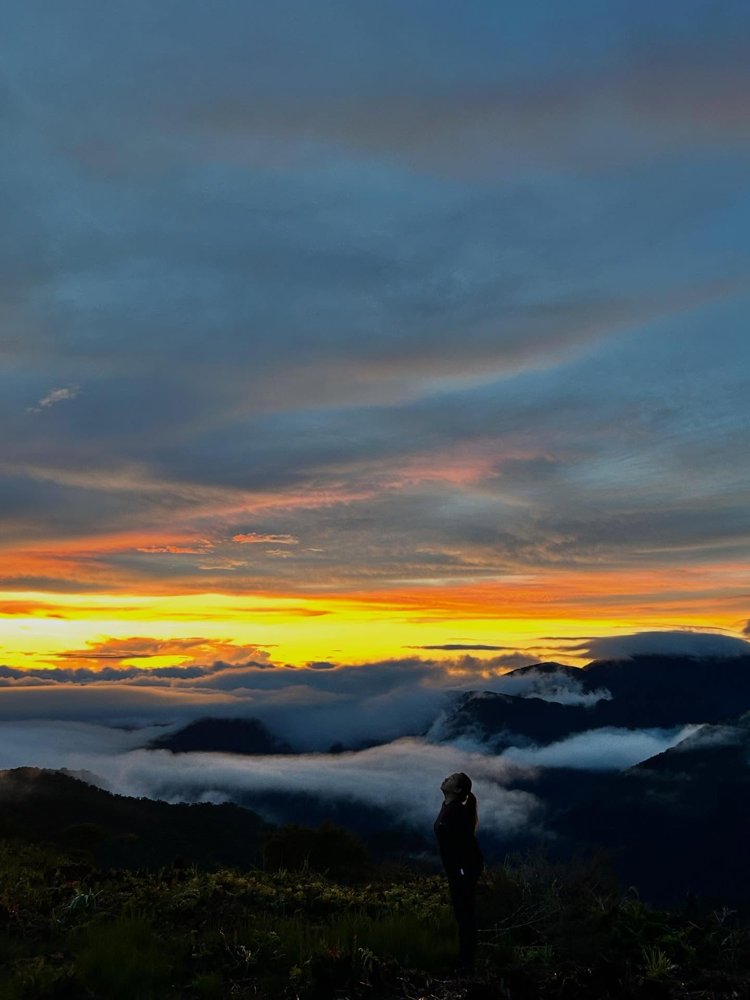
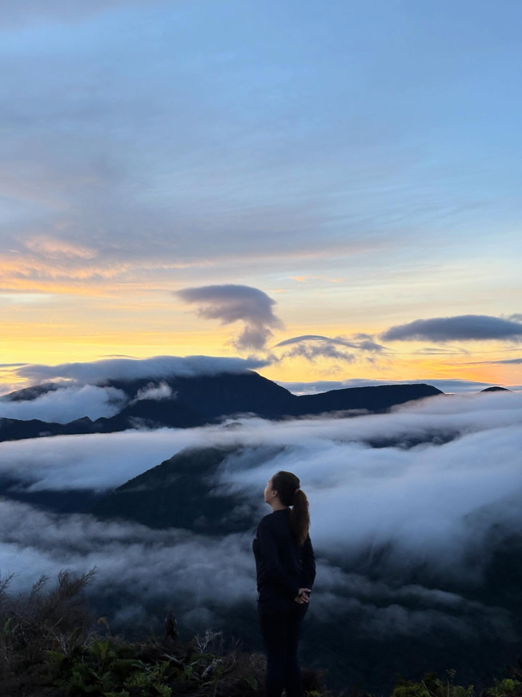
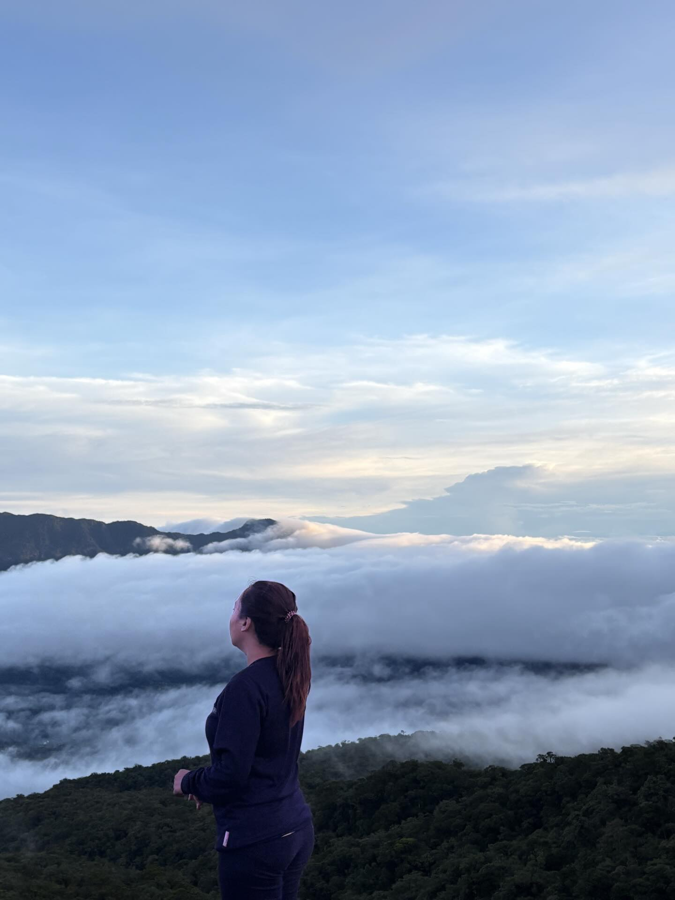
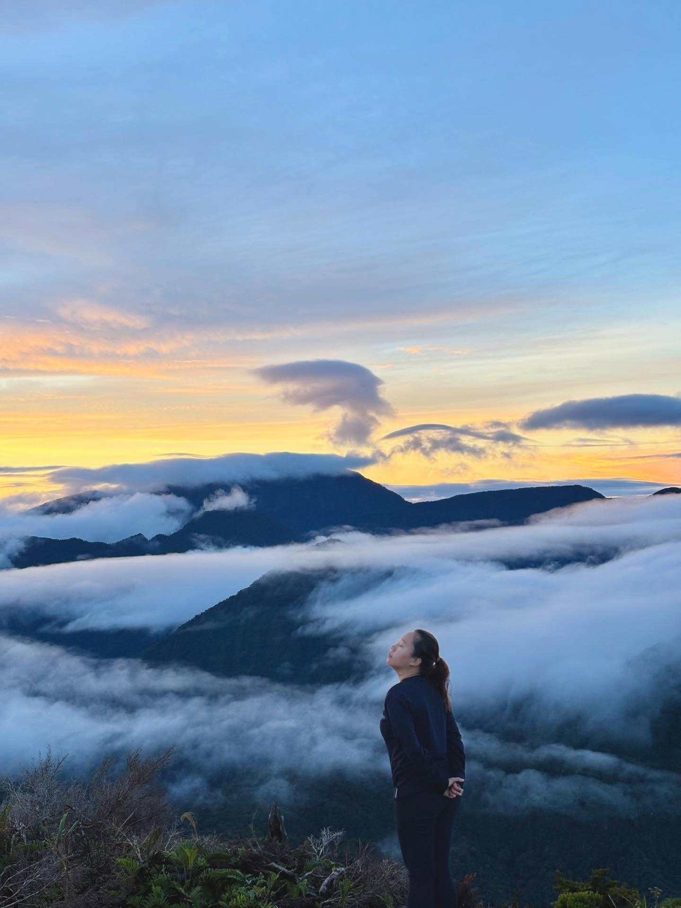
Three days of moss, to be handed one clear morning. Cold enough that breathing felt like a decision.
thesummit
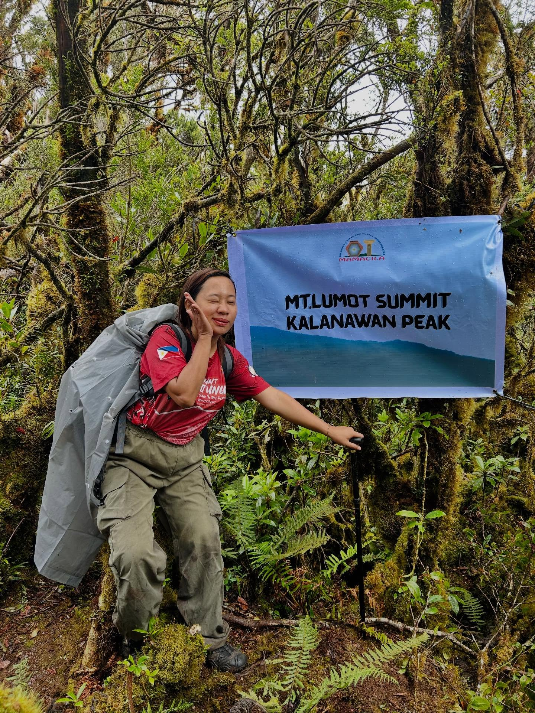
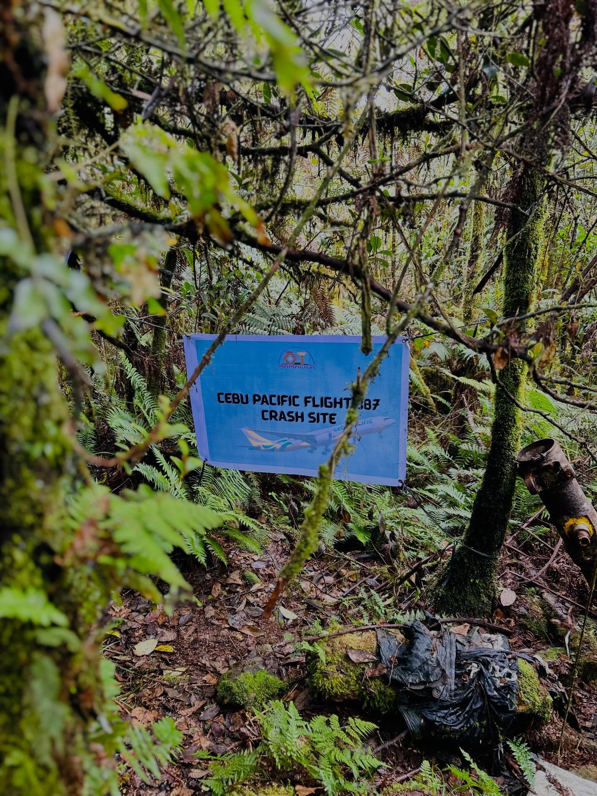
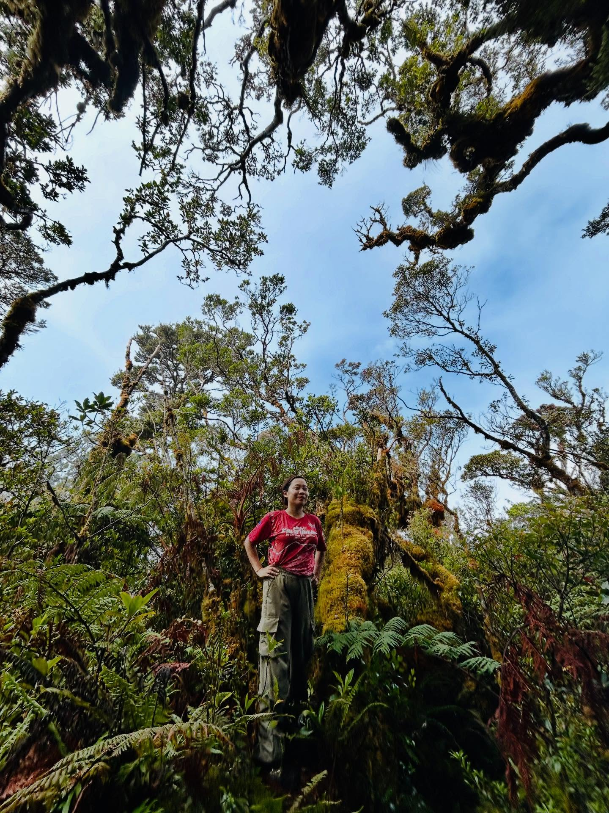
No view from the top. Just a sign, and the moss, and us. Cebu Pacific Flight 387 came down on this mountain in 1998 — the forest kept them. You carry a mountain out in your knees.